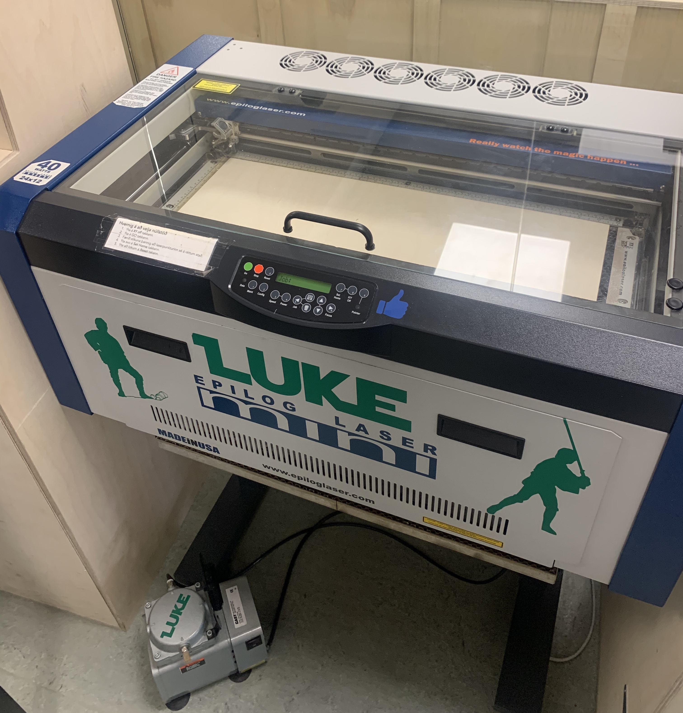
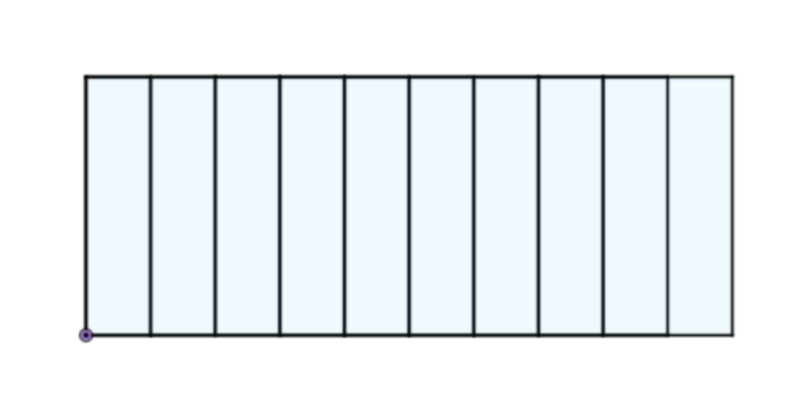
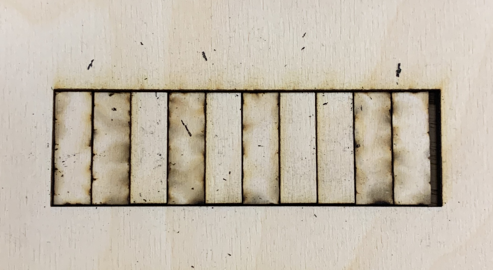

Aenean ornare velit lacus, ac varius enim lorem ullamcorper dolore aliquam.
Choose a laser cutter and determine with tests kerf for that cutter. Document the project on a common website to which every group member can link to.
This group project was done by Guðjón Hrafn Þórarinsson, Sara Rós Alfreðsdóttir and Stefán Rafn Gunnarsson.
We started by choosing a laser cutter. There are three available at Fablab and the one we chose is an Eplilog Mini 24 Laser.
The Epilog Mini 24 is a versatile CO2 laser machine and is utilized by customers for the highest-quality engraving and cutting of wood, acrylics, plastics, stone, and much more. It features a 24" x 12" (608 x 304 mm) work area and high-speed servo motors. You can create products quickly and easily with the laser system.
To be able to determine the size of kerf we have to do a few cuts and then measure spaces to calculate the size. We made our design in Fusion 360. Our design is a big rectangle with ten smaller rectangles inside, as you can see on the image below.
We notice that there are 11 vertical lines. When the laser has cut the big rectangle will be a hole which we can place the smaller rectangles inside of. Then, by pushing the small rectangles to the left we create an empty space to the right. Measuring the width of that space and dividing it by 22 (amount of vertical lines times two) we get the exact size of the kerf. The reason for why we multiply the amount of lines by two is because we want to find the radius of the laser, if we would use 11 we would be calculating the diameter.
To cut our design out we did the following steps.
Now we have our big rectangle hole on a wooden board, as was explained earlier we now put the small rectangles inside the hole and push them to the left.
Measuring the size of the empty space of the right thats visible on the photo using a caliper we got a reading of 3.26mm. Dividing that by 22 we get that the size of the KERF.
Now that we have determined the size of the kerf we can precicely cut out what ever we want by designing our own objects and then offsetting the lines of the scetch by the size of the kerf.
Aenean ornare velit lacus, ac varius enim lorem ullamcorper dolore aliquam.

Aenean ornare velit lacus, ac varius enim lorem ullamcorper dolore aliquam.

Aenean ornare velit lacus, ac varius enim lorem ullamcorper dolore aliquam.
Sed varius enim lorem ullamcorper dolore aliquam aenean ornare velit lacus, ac varius enim lorem ullamcorper dolore. Proin sed aliquam facilisis ante interdum. Sed nulla amet lorem feugiat tempus aliquam.